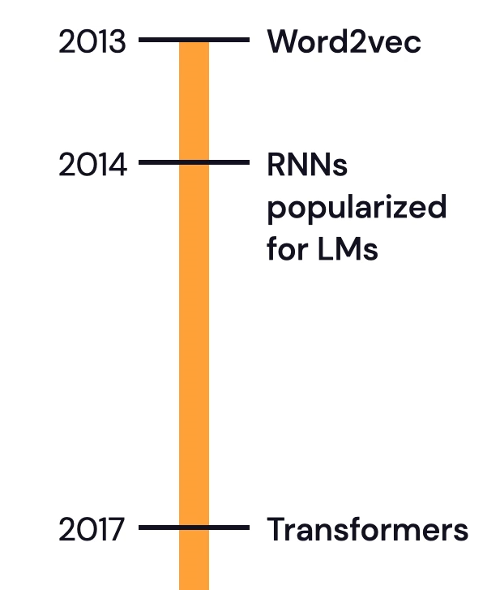
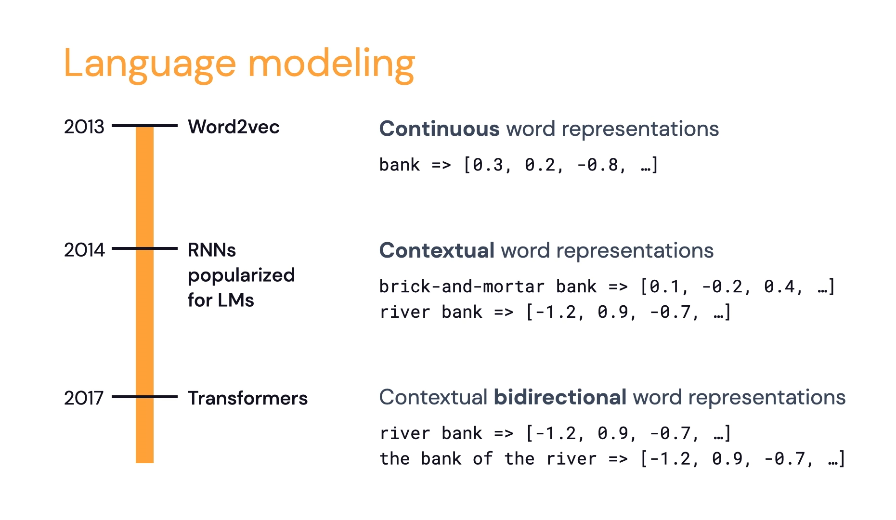
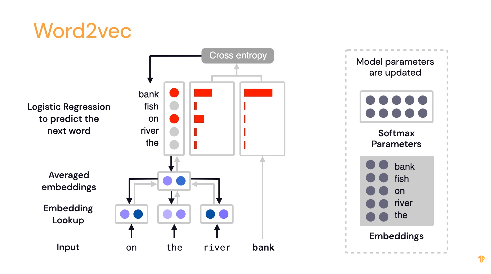
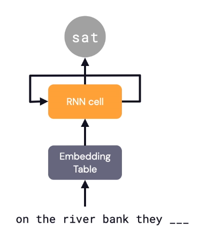
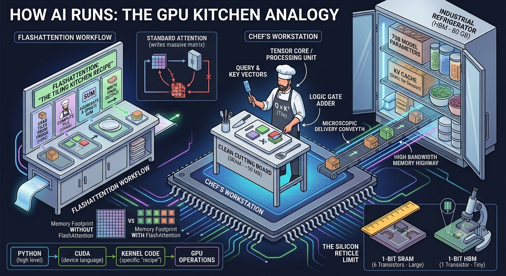
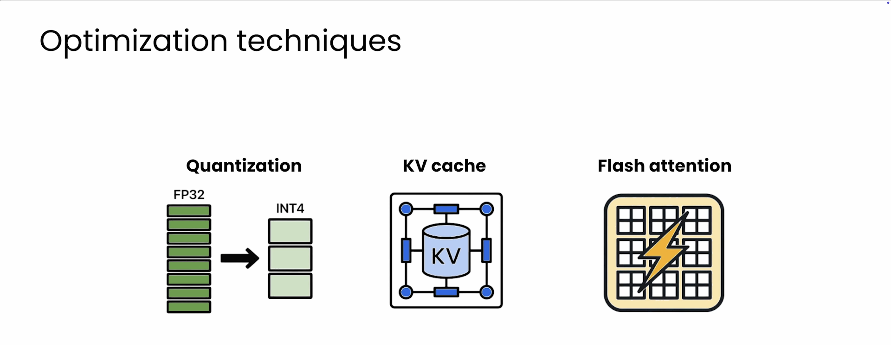

Transformers From Scratch in Code
map: 1) hyperparams blockmap: 1) hyperparams block 2) data block loss tracking function 3) Single Attention Head Class (head_size) at first B, T, C = shape 4) head_size = n_embd // num_head wei = attention scores matrix
Qs for recall:
what’s d_head’s formula? what’s wei and its formula?
The Big Tensor Shape Correction (B, T, C)
- **B = how many independent sequences will we process in parallel?
- **T = block_size = 256 # what is the maximum context length for predictions? (num_tokens_needed_to_predict_the_next)
- **C = channels = block-size = num_features = n_embd
- n_embd =
- n_head =
- n_layer = When the input X enters
Head.forward(x), its shape is (B, T, C) where C = \text{n\_embd}.
When you pass it through your Q, K, V linear layers, you project it to a new channel dimension, let’s call it D (\text{head\_size}).
\huge\text{head\_size} = \frac{\text{n\_embd}}{\text{n\_head}}
Q(X) \rightarrow (B, T, D)
K(X) \rightarrow (B, T, D)
V(X) \rightarrow (B, T, D)
Your attention score matrix (
wei) is the dot product of Q and K^T. To do this across batches, you transpose only the last two dimensions of K:
\huge\text{wei} = Q \cdot K^T \rightarrow (B, T, D) \times (B, D, T) = (B, T, T)
weiis (B, T, T). This represents how much every token in the sequence cares about every other token. This is where you applytorch.trilandsoftmax.
Finally, you multiply wei by V:
\huge\text{out} = \text{wei} \cdot V \rightarrow (B, T, T) \times (B, T, D) = (B, T, D)
__init__(self, head_size): This is called once when you create the layer. It defines what structural components live inside the head (the weights, matrices, and configuration). It only needshead_sizebecause it’s just setting up the architecture.forward(self, x): This is called every single time you pass data through the layer during training or inference.xis the actual tensor of data moving through the network.
1. Instantiation (uses init)
my_attention_head = Head(head_size=16) 2. Execution (implicitly calls forward)
output = my_attention_head(x) # x is your tensor of shape (B, T, C)class Head(nn.Module):
def __init__(self, d_head): # Instantiation
self.key = nn.Linear(n_embd, head_size, bias=False)
self.query = nn.Linear(n_embd, head_size, bias=False)
self.value = nn.Linear(n_embd, head_size, bias=False)
def forward(self, x): # Execution
# 1. Calculate raw logits (affinities)
logits = q @ k.transpose(-2, -1)
# 2. Softmax normalizes them to probabilities summing to 1.0
attention_probs = F.softmax(logits, dim=-1)
class Multihead(nn.Module):
def __init__(self, num_head, d_head): # Instantiation
...
def forward(self, x): # Execution
...
class FeedForward(nn.Module):
def __init__(self, n_embd):
...
def forward(self, x):
...
class Block(nn.Module):
def __init__(self):
...
def forward(self, x):
...
class GPT(nn.Module):
def __init__(self):
...
def forward(self, idx, targets=None):
...
def generate(self, idx, max_new_tokens):
...On why the first class outputs (B, T, head_size)?
\huge(X, Y) \times (Y, Z) = (X, Z)
In the final line of your Head forward pass, you
have:
\huge\text{wei} \ (\text{shape: } B, T, T) \quad @ \quad v \ (\text{shape: } B, T, \text{head\_size})
PyTorch ignores the batch dimension (B) and looks at the last two dimensions:
(\huge T, \underline{T}) \times (\underline{T}, \text{head\_size}) = (T, \text{head\_size})
BatchNorm normalizes across the batch dimension.
LayerNorm normalizes across the channel dimension (
n_embd) for each individual token independently.We have two LayerNorms because we have two distinct sub-layers inside the block:
ln1stabilizes the data before it goes into Attention.ln2stabilizes the data after attention, right before it goes into the FFN.
Visual References






